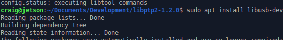
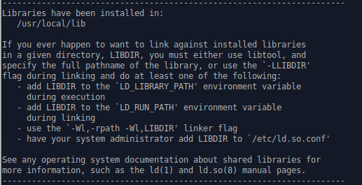
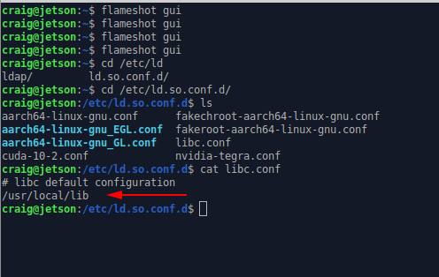
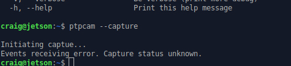
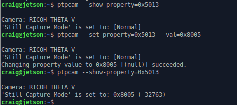
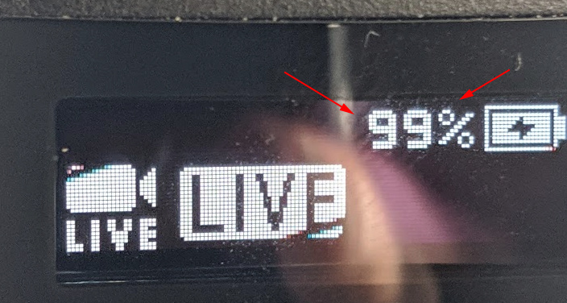

USB API
Setup libptp
Download libptp source
libptp - Picture Transfer Protocol lib
Get the newest version, which is 2-1.2 right now.

build libptp
$ ./configure
$ make
If you have a build error when compiling libusb, you may need to install the development libraries for libusb.

install libusb-dev
$ sudo apt install libusb-dev
You may not need this step if you already have the libusb development libraries installed.

Example on x86 Ubuntu 20.04.
$ sudo apt-get install libusb-dev
install libptp
$ sudo make install

On x86 Ubuntu 20.04.
$ tar zxvf libptp2-1.2.0.tar.gz
libptp2-1.2.0/
./configure ran with no problems
make ran with no problems
sudo make install ran with no problems
$ pwd
/usr/local/lib
$ ls -l libptp2.*
-rw-r--r-- 1 root root 352640 Aug 31 11:54 libptp2.a
-rwxr-xr-x 1 root root 941 Aug 31 11:54 libptp2.la
lrwxrwxrwx 1 root root 16 Aug 31 11:54 libptp2.so -> libptp2.so.1.1.5
lrwxrwxrwx 1 root root 16 Aug 31 11:54 libptp2.so.1 -> libptp2.so.1.1.5
-rwxr-xr-x 1 root root 249352 Aug 31 11:54 libptp2.so.1.1.5
set /usr/local/lib in library path
The default location of the libptp install is /usr/local/lib.
Make sure that this is in your library path. If it isn't,
add it to a file such as libc.conf in /etc/ld.so.conf/.
$ cd /etc/ld.so.conf.d/
$ ls
$ cat libc.conf

run ldconfig
Load the library configuration.
$ sudo /sbin/ldconfig -v

On x86 Ubuntu 20.04.
$ cd /etc/ld.so.conf.d/
$ l
fakeroot-x86_64-linux-gnu.conf x86_64-linux-gnu.conf
i386-linux-gnu.conf zz_i386-biarch-compat.conf
libc.conf
$ cat libc.conf
# libc default configuration
/usr/local/lib
$ sudo ldconfig
$
Test ptpcam
Connect RICOH THETA to Jetson with a USB cable.
Version of 2-1.2 of libptp has a bug in it. Although ptpcam does take pictures and function normally, you will see an error about capture status.

On x86 Ubuntu.
$ ptpcam --info
Camera information
==================
Model: RICOH THETA Z1
manufacturer: Ricoh Company, Ltd.
serial number: '10010104'
device version: 1.50.1
extension ID: 0x00000006
extension description: (null)
extension version: 0x006e
$ cat /proc/cpuinfo
processor : 0
vendor_id : GenuineIntel
cpu family : 6
model : 60
model name : Intel(R) Pentium(R) CPU G3258 @ 3.20GHz
Fix problem with libptp response
Go to line 77 of ptp.h and change PTP_USB_INT_PACKET_LEN
to 28.

After modification, the code will look like this.

Using USB API
test ptpcam response again
Take a still image picture with ptpcam --capture.

Set camera to live streaming mode
Check on camera mode.
$ ptpcam --show-property=0x5013
Set to live streaming mode.
$ ptpcam --set-property=0x5013 --val=0x8005

Using the official
RICOH USB API documentation, you can verify that
0x8005 is live streaming mode. The camera LED should show that
the THETA is in LIVE mode.
In our tests, the RICOH THETA Z1 could charge while streaming over a USB 3.0 port (blue insert).
After hours of streaming, the Z1 LED looks like this.

The response codes are shown below.
0x0001 = single-shot shooting
0x0003 = Interval shooting
0x8002 = Movie shooting
0x8003 = Interval composite shooting
0x8004 = Multi bracket shooting
0x8005 = Live streaming
0x8006 = Interval shooting - tripod stabilizatio is off
(top/bottom correction and stitching optimized)
0x8007 = Interval shooting - tripod stabilization is on
If you set the camera back to still image, single shot mode, you will see this response.
$ ptpcam --set-property=0x5013 --val=0x0001
Camera: RICOH THETA V
'Still Capture Mode' is set to: 0x8005 (-32763)
Changing property value to 0x0001 [(null)] succeeded.
Wake Camera From Sleep
In this test, I have the Z1 power off disabled. I left the camera in sleep mode overnight. When I woke up in the morning, I work the Z1 up using an ssh session into the Jetson Nano and running this command.
$ ptpcam --set-property=0xD80E --val=0x00
Camera: RICOH THETA Z1
'UNKNOWN' is set to: 1
Changing property value to 0x00 [(null)] succeeded.
I tested the camera with the info command.
$ ptpcam --info
Camera information
==================
Model: RICOH THETA Z1
manufacturer: Ricoh Company, Ltd.
serial number: '10010104'
device version: 1.50.1
extension ID: 0x00000006
extension description: (null)
extension version: 0x006e
In my initial tests, I had to run the info command twice after
I woke the camera up from sleep. The first time, I could not
open the session.
I got this error.
$ ptpcam --info
ERROR: Could not open session!
In the future, I'll run more tests using the camera FunctionalMode to check status.
Put Camera in Still Image Mode
You may want to take a detailed picture of the scene based on triggers from the live stream.
To do this, you need to take the camera out of live streaming mode and put it into still image mode. In the example below, I wrapped ptpcam in a script that explains the hexcode properties of the mode settings. This helps me with testing.
$ ptpcam --set-property=0x5013 --val=0x0001
Camera: RICOH THETA Z1
'Still Capture Mode' is set to: [Normal]
Changing property value to 0x0001 [(null)] succeeded.
0x0001 = single-shot shooting
0x0003 = Interval shooting
0x8002 = Movie shooting
0x8003 = Interval composite shooting
0x8004 = Multi bracket shooting
0x8005 = Live streaming
0x8006 = Interval shooting - tripod stabilizatio is off
(top/bottom correction and stitching optimized)
0x8007 = Interval shooting - tripod stabilization is on
You can verify the mode of with 0x5013.
$ ptpcam --show-property=0x5013
Camera: RICOH THETA Z1
'Still Capture Mode' is set to: [Normal]
Compare this with the result when the camera is in live streaming mode.
$ ptpcam --show-property=0x5013
Camera: RICOH THETA Z1
'Still Capture Mode' is set to: 0x8005 (-32763)
0x0001 = single-shot shooting
0x0003 = Interval shooting
0x8002 = Movie shooting
0x8003 = Interval composite shooting
0x8004 = Multi bracket shooting
0x8005 = Live streaming
0x8006 = Interval shooting - tripod stabilizatio is off
(top/bottom correction and stitching optimized)
0x8007 = Interval shooting - tripod stabilization is on